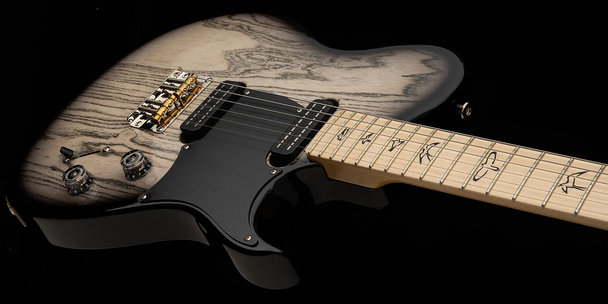

Paul Reed Smith: Crafting Excellence

Unmatched Craftsmanship
PRS (Paul Reed Smith) guitars are celebrated for their exceptional craftsmanship and attention to detail. Each instrument is meticulously built, resulting in guitars that are not only visually stunning but also deliver outstanding sound quality. PRS guitars are favored by musicians across genres for their versatility, reliability, and beautiful finishes. The company’s commitment to innovation and quality has made PRS a leader in the guitar industry, with models that appeal to both beginners and seasoned professionals.
Sound and Versatility
Known for their rich, dynamic tones, PRS guitars are equipped with high-quality pickups and hardware. These features allow players to achieve a wide range of sounds, from warm jazz to powerful rock. The ergonomic design ensures comfort during long playing sessions, while the durable construction guarantees longevity. PRS continues to push the boundaries of guitar design, offering instruments that inspire creativity and elevate musical performance. Discover why PRS guitars are a top choice for artists around the world.
- Stunning finishes
- Versatile pickups
- Comfortable neck profiles
- Trusted by top musicians
Official PRS Guitars
PRS Guitars on Wikipedia